얼굴 없는 쇼츠 채널, 왜 지금일까요?
영상은 숫자부터 보여 줘요. 발표자는 브라우저의 vidIQ 확장 프로그램으로 유튜브 채널 페이지에 통계 창을 띄워요. 아래 화면 오른쪽 칸의 'Est. monthly earnings $30.1K'가 vidIQ가 추정한 이 채널의 한 달 수익이에요.
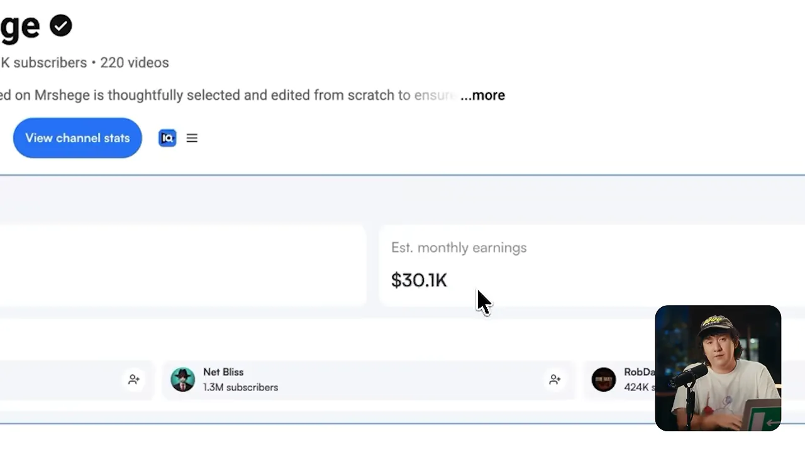
발표자가 소개한 채널들은 모두 얼굴 없는 채널이에요. 촬영도, 스튜디오도, 팀도 없으니 비용이 거의 안 들고 수익이 거의 다 남는다는 게 발표자의 설명이에요. 세 번째로 보여 준 채널은 시작한 지 1년이 안 됐는데도 올해 여섯 자리 달러, 그러니까 10만 달러 이상을 벌 페이스라고 해요.
사람이 줄었다: 구글 트렌드
왜 지금이냐는 첫 번째 근거는 검색 관심도예요. 아래 그래프는 구글 트렌드에서 'YouTube Automation'을 미국, 최근 5년, 유튜브 검색 기준으로 본 거예요. 2023년 초에 크게 치솟고 2025년에 한 번 더 올랐다가, 오른쪽 끝 2026년 구간에서 계속 내려가요.
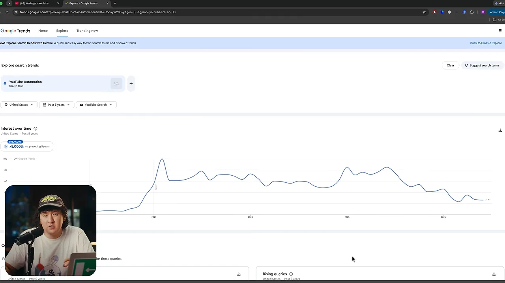
발표자는 지금 관심도가 2022년 말 이후 가장 낮은 축이라고 말해요. 그래서 유튜브 자동화가 포화라는 말은 데이터와 반대라는 거예요. 다만 검색 관심도는 '자동화 채널을 하려는 사람'의 대략적인 신호일 뿐, 실제 경쟁 채널 수를 세는 건 아니에요.
돈은 늘었다: 쇼츠 RPM
두 번째 근거는 RPM이에요. 발표자는 미국 쇼츠 RPM이 지금 40센트를 넘는다고 말하고, 2주 만에 1,400만 회가 나온 쇼츠 하나로 계산해 보여 줘요. 화면에는 숫자가 지나가듯 떠서, 그 계산을 그림으로 옮겼어요.
여기에 Claude가 더해진다는 게 발표자의 마지막 근거예요. 잘되는 것을 조사하고 아이디어를 내는 일을 Claude가 끝없이 해 주고, 편집은 다른 AI(Artificial Intelligence) 도구가 맡아요. 조사부터 업로드까지 쇼츠 한 편에 10분쯤이면 된다고 해요.
새 채널에 권하는 니치: 랭킹 영상
발표자는 니치가 채널의 성패를 가장 크게 가른다고 말해요. 그런데 후보를 스무 개 늘어놓지 않고, 2026년에 새 채널이 가장 빨리 뜨는 니치 하나만 꼽아요. 랭킹 영상이에요. 틱톡이나 인스타그램에서 클립 몇 개를 모아 이어 붙이고, 가장 웃긴 순 같은 기준으로 순위를 매기는 형식이에요.
아래는 예로 든 채널의 쇼츠 목록이에요. 'Ranking Best Dodgeball Fails', 'Ranking Best Football Touches'처럼 제목이 모두 Ranking으로 시작하고, 썸네일 왼쪽에 1~5위 번호가 세로로 붙어 있어요. 가운데 축구 영상 아래 조회수는 340만 회예요.
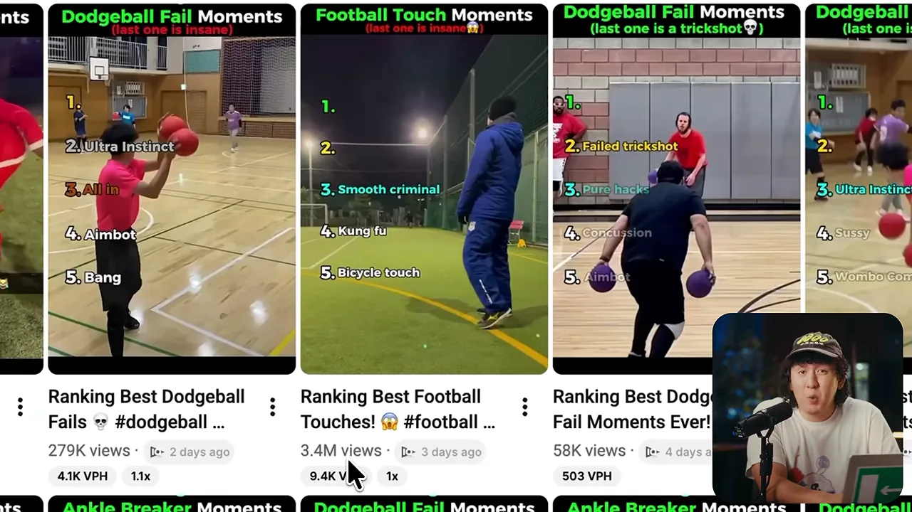
이 채널은 시작한 지 석 달 됐는데 며칠 전 영상이 340만 회, 2주 전 영상이 620만 회라고 해요. 발표자는 vidIQ로 추정 수익을 직접 확인해 보라고 권해요.
두 번째로 보여 준 채널은 정보 창을 열어 숫자를 보여 줘요. 화면에는 구독자 269만 명, 영상 304개, 누적 조회수 33억 8천만 회가 적혀 있어요. 발표자는 말로는 구독자 '거의 200만'이라고 했지만, 화면 숫자는 그보다 많아요.
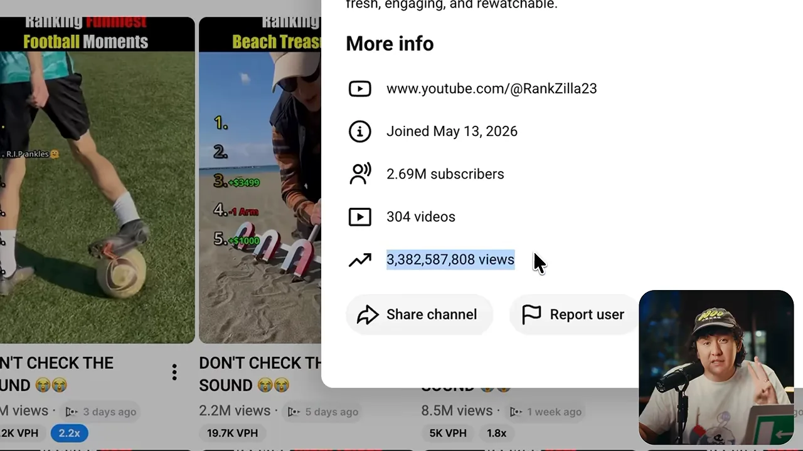
참고 채널은 이런 식으로 서너 개 정해 두라고 해요. 그 채널들의 영상에 좋아요와 댓글을 남기면 쇼츠 피드가 금세 랭킹 영상으로 채워져요. 그다음엔 피드를 넘기기만 해도 새 랭킹 채널이 계속 나온다는 거예요. 이렇게 모은 참고 채널이 다음 단계에서 Claude에게 분석을 맡길 대상이에요.
Claude와 vidIQ로 터질 주제 뽑기
여기서부터가 실제 작업이에요. 발표자는 아이디어와 조사를 Claude에게 맡기는데, 그 전에 vidIQ를 Claude에 연결해야 해요. 순서는 이래요.
- 구글에서 'vidIQ Chrome extension'을 찾아 크롬에 설치해요 — 무료예요.
- Claude에 들어가 무료 계정을 만들고 화면을 새로 고쳐요 입력창 옆에 vidIQ 메뉴가 생겨요
- vidIQ 메뉴에서 'Connect YouTube insights'를 누르고, 이어지는 페이지에서 승인해요 메뉴를 다시 열면 연결됨으로 보여요
아래가 2단계 뒤 Claude 입력창 위에 뜬 vidIQ 창이에요. 'Audit my channel', 'Analyze my latest video' 같은 예시 아래에 검은 'Connect YouTube insights' 버튼이 있어요.
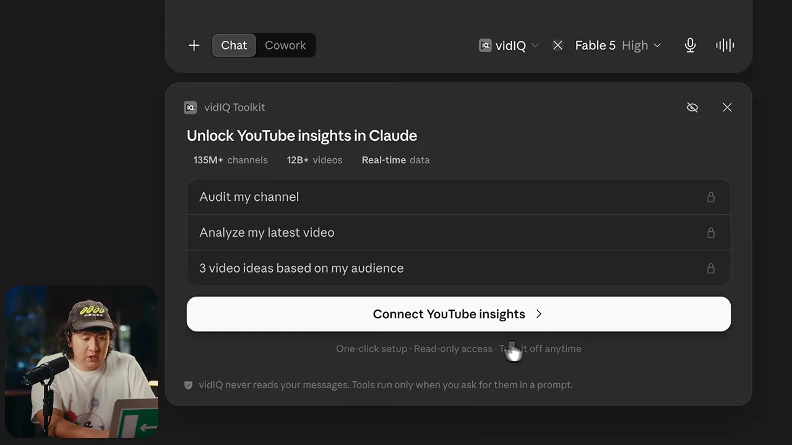
경쟁 채널 분석 돌리기
이제 참고 채널 하나를 골라요. 발표자는 생긴 지 얼마 안 됐는데 영상마다 수십만~수백만 회가 나오는 채널을 예로 들어요. 채널 소개의 'more'를 누르면 정보 창이 뜨고, 맨 아래 'Share channel → Copy channel ID'로 채널 ID(Identifier)를 복사해요.
Claude로 돌아와 입력창 왼쪽 +를 누르고 Connectors → Add from vidIQ로 들어가요. 아래 화면 오른쪽 끝 목록에 준비된 분석 메뉴가 보여요. 두 번째 'Competitor Breakdown'이 경쟁 채널 분석이에요.
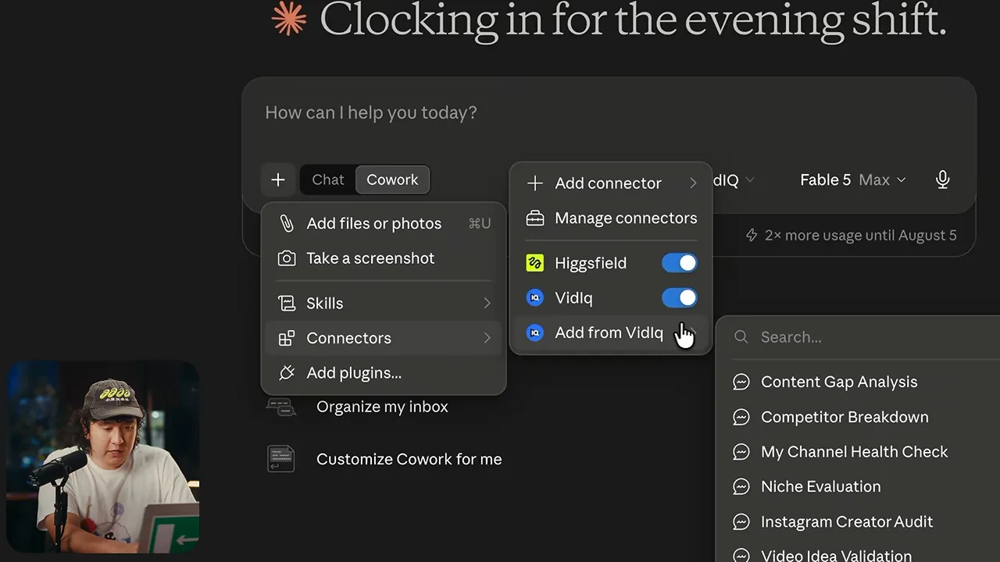
Competitor Breakdown을 고르면 입력 창이 떠요. 설명에는 '경쟁 채널의 성장, 인기 영상, 키워드를 분석한다'고 적혀 있고, 아래 ChannelId 칸에 복사한 ID를 붙여 넣어요. 'Add prompt'를 누르면 입력창에 작업이 담기고, 보내기만 하면 돼요.
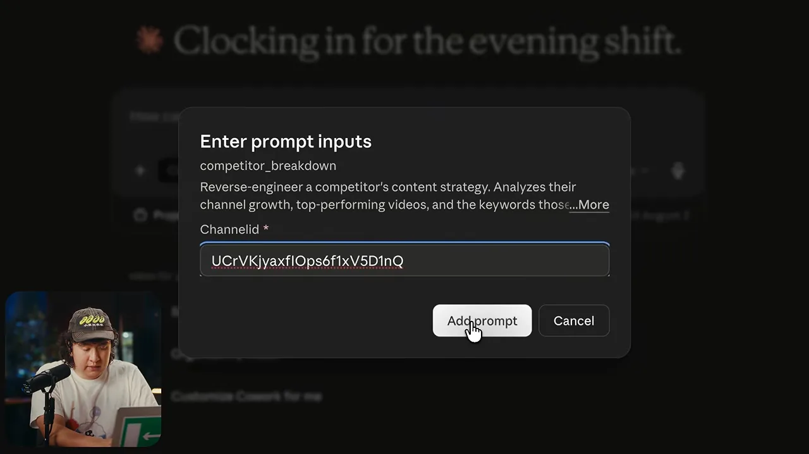
보내면 Claude가 vidIQ 도구를 차례로 부르며 권한을 물어요. 대부분 'Always allow'를 누르면 되고, 5분쯤 걸려요. 아래는 작업 중간 화면이에요. 가운데에는 'funny memes' 키워드의 월 검색량 45만 7천 회와 관련 키워드 표가 있어요. 오른쪽 Progress에는 채널 통계, 인기 영상, 키워드 분석, 보고서 작성 단계가 하나씩 지워져 가요.
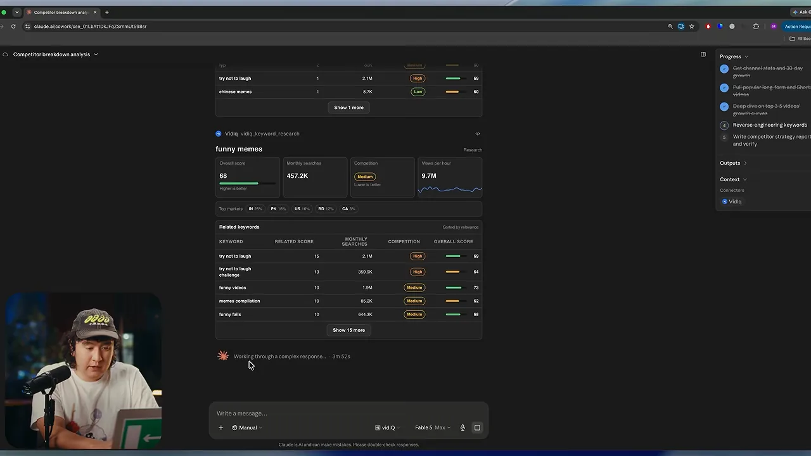
검증된 주제 받아 내기
보고서가 끝나면 같은 대화에서 이어 물어요. 발표자는 '이 채널에서 가장 잘된 걸 바탕으로 바이럴될 랭킹 영상 주제 목록을 달라'고 해요. 아래가 그 답이에요. 'The proven winning topics' 아래에 트램펄린장 실수, 극한 높이 1인칭 시점, 워터슬라이드 실수 같은 주제가 조회수 근거와 함께 순서대로 붙어 있어요.
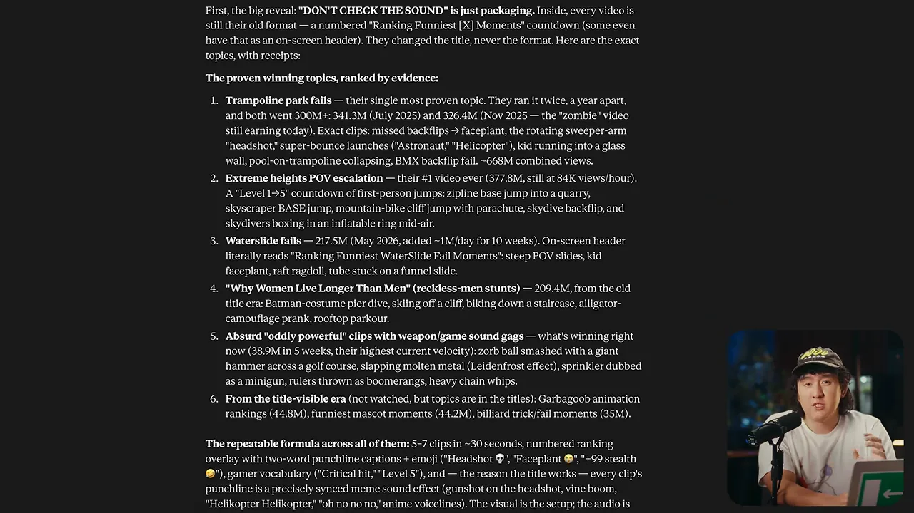
화면 맨 위에는 흥미로운 지적도 있어요. 이 채널은 제목만 DON'T CHECK THE SOUND로 바꿨을 뿐, 안은 예전과 같은 '가장 웃긴 ○○ 순위' 형식이라는 거예요. 발표자는 랭킹 영상은 아이디어가 성패를 가른다고 봐요. 그래서 남의 채널에서 이미 터진 주제를 그대로 가져오는 거예요. 발표자가 고른 예는 '가장 아찔한 운전 아차 사고 순위'예요.
랭킹 영상 한 편 만들기
주제를 골랐으면 영상을 만들어요. 발표자는 랭킹 영상 전용 편집 도구 RankReel을 써요. 제목을 넣고, 순위 칸마다 틱톡 클립을 넣고, 클립마다 이름을 붙이고, 재생 순서를 정하면 세로 영상 한 편이 나와요. 도구 사용법보다 중요한 건 발표자가 함께 짚은 다섯 가지 규칙이에요.
| 규칙 | 어떻게 | 왜 |
|---|---|---|
| 제목은 두 줄 | 한 줄도 세 줄도 아닌 두 줄. 가운데쯤에서 줄을 나눠요 | 큰 랭킹 채널 제목이 모두 이 형식이에요 |
| 핵심 단어에 색 | 무슨 영상인지 알려 주는 단어만 칠해요 | 보자마자 내용을 알아야 넘기지 않아요 |
| 바이럴 클립만 | 틱톡에서 조회수 수백만 회 클립을 골라요 | 원래 안 뜬 클립은 내 영상에서도 안 떠요 |
| 클립 5~7개 | 잘된 영상은 대부분 6개 안팎이에요 | 많으면 끝까지 안 보고, 적으면 시청 시간이 모자라요 |
| 순서 섞기 | 순위를 오가다 1위는 맨 끝에 둬요 | 다음이 궁금해야 끝까지 봐요 |
제목: 두 줄, 핵심 단어에 색
발표자는 큰 랭킹 채널의 제목을 예로 들어요. 아래 영상 제목은 'Ranking Funniest / Olympic Moments' 두 줄이에요. 'Funniest'는 노란색, 'Olympic'은 빨간색이라 핵심 단어가 먼저 눈에 들어와요.
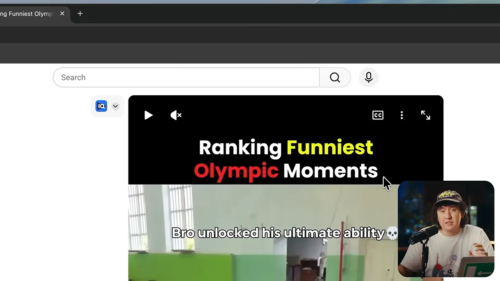
발표자는 자기 제목 'Ranking best football moments'에 이 규칙을 적용해요. 중간에서 줄을 바꾸고, 오른쪽 Keywords에서 'football'과 'moments'만 골라 청록색을 입혀요. 'best'는 아무 정보도 더하지 않아서 빼요.
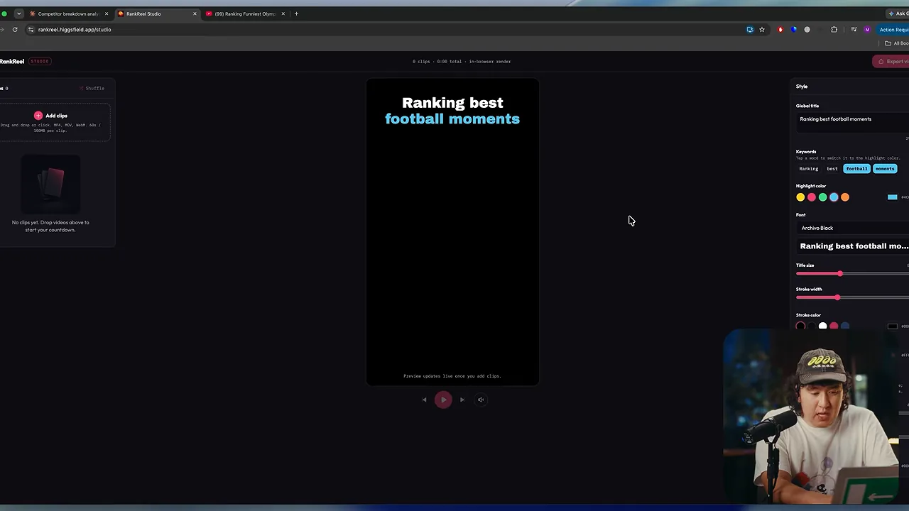
클립: 틱톡에서 이미 뜬 것만
클립은 틱톡에서 찾아요. 발표자는 틱톡 검색이 영상 찾기에 가장 좋다고 말해요. 아래는 'football'을 검색한 결과예요. 썸네일 왼쪽 아래 하트 옆 숫자가 좋아요 수예요. 120만, 92만처럼 이미 크게 반응을 얻은 클립이 섞여 있어요.
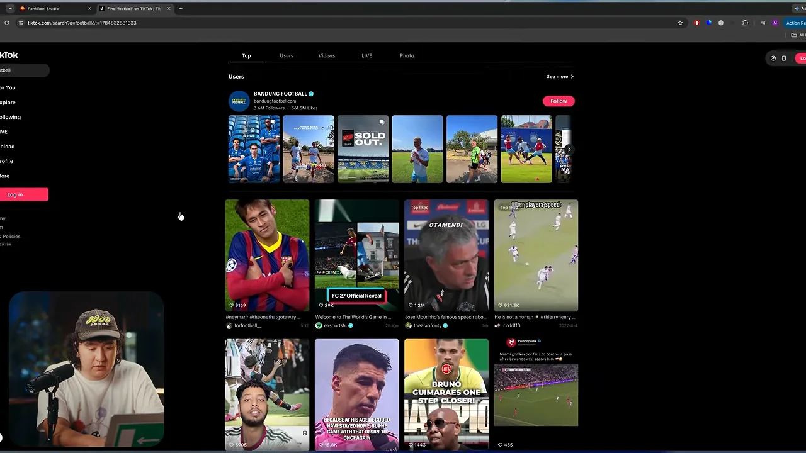
고른 클립을 내려받아 첫 순위 칸에 넣으면 미리보기에 바로 들어가요. 아래 화면 미리보기 오른쪽 위에 '#1' 표시가 붙었고, 왼쪽 목록의 클립 옆에는 이름을 적는 칸이 열려 있어요.
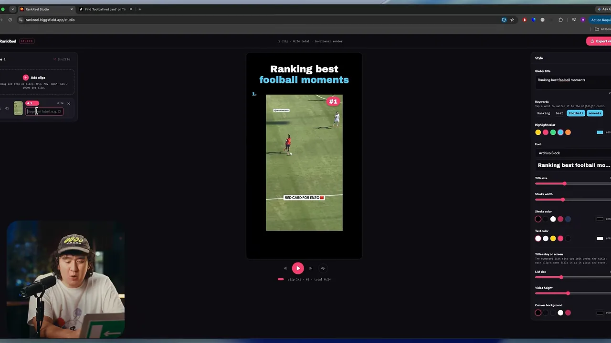
발표자는 이 클립에 '인스턴트 카르마'라는 이름을 붙여요. 큰 채널도 '레드카드'처럼 클립마다 이름을 단다고 해요. 같은 과정을 되풀이해 클립을 너덧 개 더 채워요.
아래는 클립 여섯 개를 다 넣은 화면이에요. 영상 왼쪽 위에 '1. Instant Karma'부터 5위까지 이름 목록이 쌓이고, 지금 재생 중인 클립에는 '#5' 표시가 붙어 있어요. 화면 위쪽에는 '6 clips · 2:23 total'이라고 적혀 있어요.
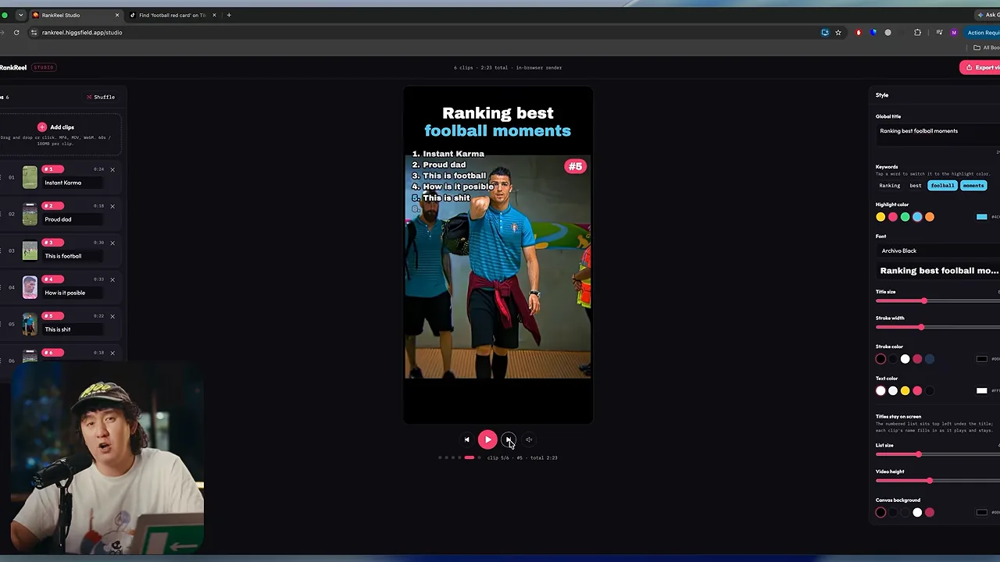
순서: 1위는 끝에, 나머지는 섞어서
발표자가 다음으로 중요하다고 꼽은 게 재생 순서예요. 큰 랭킹 영상은 7위, 6위, 5위처럼 차례로 내려가지 않아요. 2위를 먼저 보여 주고, 6위로 갔다가, 다시 위로 뛰어요. 1위만은 늘 맨 끝이에요. 말로 설명한 두 순서를 나란히 그렸어요.
도구에서는 재생 순서 직접 정하기를 켜고 Shuffle을 누르면 순서가 저절로 섞여요. 원하면 클립을 끌어서 손으로 옮겨도 돼요. 아래 화면에서 목록 첫 칸이 '#5', 둘째 칸이 '#1', 셋째 칸이 '#3'이에요. 순위와 재생 순서가 따로 노는 게 보여요.
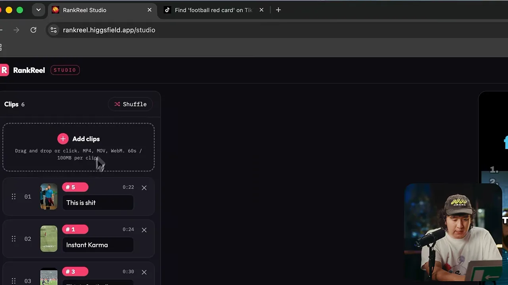
매일 올리기
마지막 규칙은 꾸준함이에요. 발표자는 하루 1~2개를 매일 올리라고 하고, 하루라도 건너뛰면 바이럴은 없다고 못 박아요. 근거로 앞에서 본 채널들의 동영상 탭을 열어 보라고 해요.
아래는 그런 채널의 쇼츠 목록이에요. 제목 아래 업로드 시점이 '1 week ago', '2 weeks ago', '3 weeks ago'로 촘촘하게 이어져요. 썸네일은 모두 번호가 붙은 축구 순위 영상이고, 조회수는 3만 회부터 1,300만 회까지 들쭉날쭉해요.
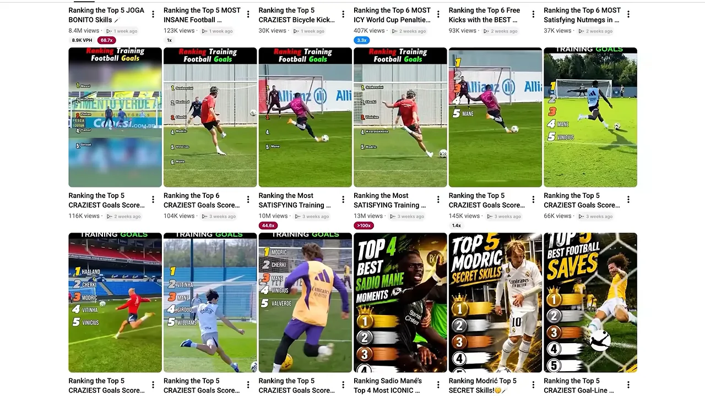
발표자는 월 5만 달러로 추정되는 채널도 하루도 빼먹지 않았다며, 꾸준함이 우연이 아니라 이유라고 말해요. 전체 흐름을 한 번에 보면 이래요.
flowchart LR A["니치: 랭킹 영상"] --> B["참고 채널 찾기"] B --> C["Claude + vidIQ
경쟁 채널 분석"] C --> D["검증된 주제 고르기"] D --> E["틱톡 바이럴 클립
5~7개"] E --> F["두 줄 제목 · 색 강조
순서 섞기"] F --> G["매일 1~2개 업로드"]
발표자의 결론은 이거예요. Claude로 조사하고, RankReel로 만들고, 무슨 일이 있어도 매일 올리면 몇 주 뒤 수익이 나는 채널이 될 수도 있다는 거예요.